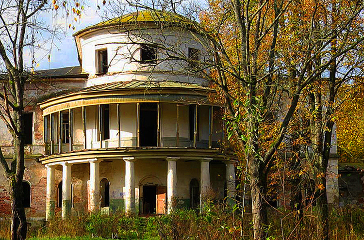
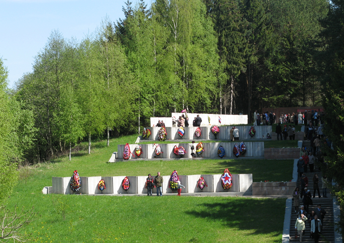
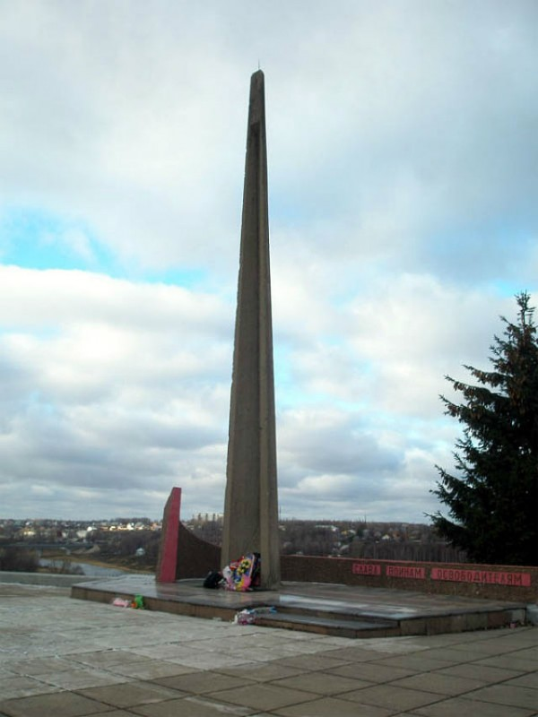
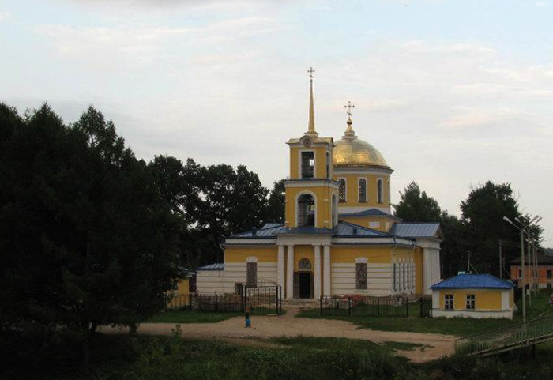
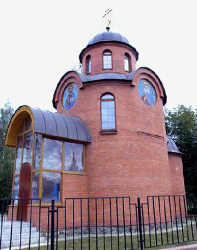

Зубцов
Культура
Усадьба Степановское
Данный исторический и архитектурный объект эпохи классицизма примерно с XV века являлся родовым имением князей Куракиных. Само новое жилое строение было построено значительно позже в 1792 году.
Постройка имеет интересную композицию: в середине здания расположен двухэтажный корпус с мезонином, фасад которого венчает четырехколонный портик на аркадах, по обеим сторонам корпуса располагаются двухэтажные флигели, соединенные ротондами с главным домом. Автором данного проекта является итальянский архитектор Джакомо Кваренги.
В здании усадьбы с 1970 по 2003 года был расположен психоневрологический диспансер. А в 2005 году на территории имения разразился сильный пожар, который сильно повредил главный дом. На сегодняшний день Степановское имеет статус исторического объекта.
Мемориальный комплекс
 Комплекс появился в 1978 году в месте слияния Волги и Вазузы на Московском холме.
Московский холм является братской могилой для советских солдат, защищавших Зубцов от фашистских войск. Место славы венчает 15-ти метровый обелиск в виде штыка
Здесь установлена доска, на которой написаны фамилии всех погибших солдат, и камень, на котором написаны фамилии жителей Зубцовского района, погибших в горячих точках.
Собор Успения Богоматери
Первоначально на месте собора в 1692 году дворянином Максимом Цызыпевым была построена небольшая церковь, выполненная мастерами зодчества из дерева. В 1801 году на пожалованные императорской казной деньги воздвигается здание храма из камня.
Собор был закрыт в 1930-х годах, вновь его открыли уже после войны. Собор Успения Богоматери был на протяжении довольно долгого времени единственным действующим религиозным объектом.
Часовня во имя Николая Чудотворца
Часовня была построена на пожертвования горожан, в 2006 году. Она расположена неподалеку от трассы «Балтия», это связано с тем, что святой Николай Чудотворец является покровителем путешественников.
Затопленная часовня в Гнездилово

В 1795 году в Зубцове была построена недалеко от деревни Гнездилово небольшая часовня, принадлежащая церкви Владимирской иконы Божьей матери. По легенде, ее заказал построить один богатый купец, сын которого утонул на месте будущего строительства часовни.
В Советское время церковь оказалась заброшенной, затопленной Вазузским водохранилищем.